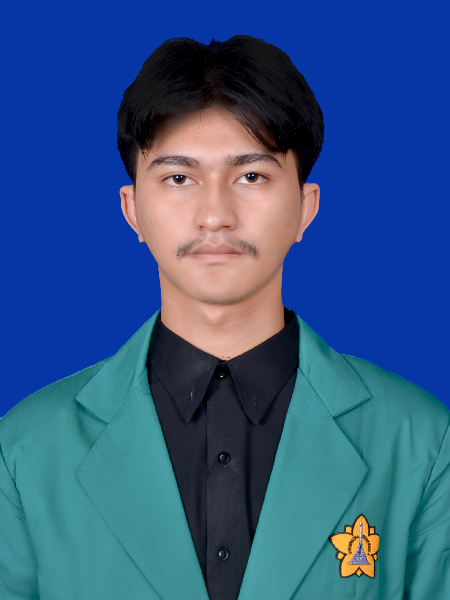

MAKSALMINA
Cyber Security
Mahasiswa Teknik Komputer dengan fokus pada Software Engineering, Cybersecurity, UI/UX Design, dan Database Design. Terampil dalam Python, pengolahan database, serta sistem operasi. Memiliki minat pada pengembangan solusi perangkat lunak yang aman, efisien, dan ramah pengguna. Berpengalaman sebagai Video Editor dan Team Leader.